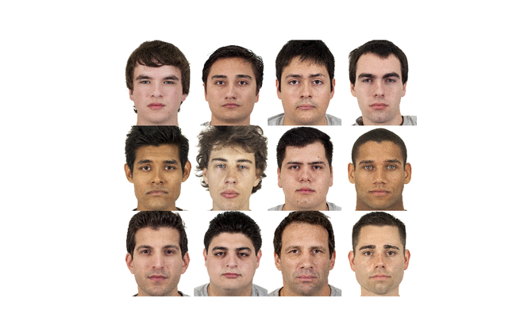
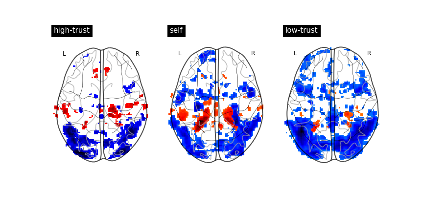
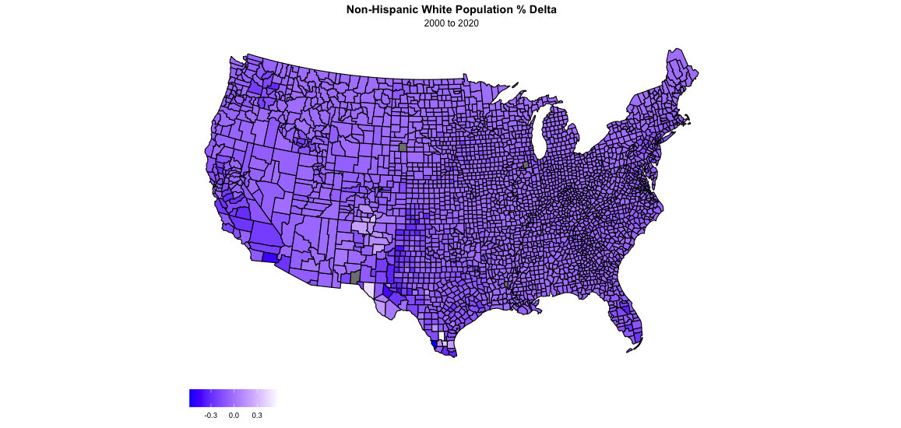
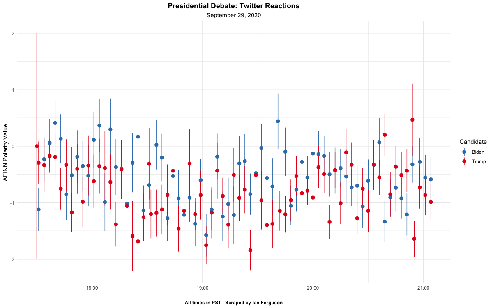

I am the lab manager of the Stanford Social Neuroscience Lab, under the direction of Dr. Jamil Zaki. I earned my undergraduate degree from Virginia Commonwealth University in 2015, and my Master's degree in psychology from New York University in 2020.
My research interests lie at the intersection of social psychology, cognitive neuroscience, and political science. Broadly, I am interested in the varied factors that polarize us - whether they be internal or external. My work seeks to understand how to best reduce polarization at the source - i.e., at the point of information reception - via the use of interventions, syntax modification, and novel message framing
For a primer on this work, see my Master's Thesis, developed at NYU under the guidance of Dr. Jon Freeman and Dr. DongWon Oh


A subset of participants were primed information that their social class (white Americans) would lose social dominance in the next 50 years. They then evaluated a number of mixed race groups, and determined the degree to which the group appeared threatening. Pariticipants primed with future status loss reported higher ratings of threat in majority-Latino ensembles than control participants.
An automated, full-scale processing pipeline for functional neuroimaging data. This project extends various components of the NiPy ecosystem, and allows the user to manipulate various regressors and contrast designs externally, without changing any of the source code
In an ongoing project, I'm exploring the degree to which shrinking non-Hispanic white population percentage influences success for more ideological extreme candidates. This project leverages data from the US Census in conjunction with publically available voting data
I wrote a Python script to scrape tweets every minute for the duration of the first Presidential debate. The tweets were then assessed for semantic valence and averaged, giving us a (very) rough estimate of affective response to each candidate's performance in real-time
